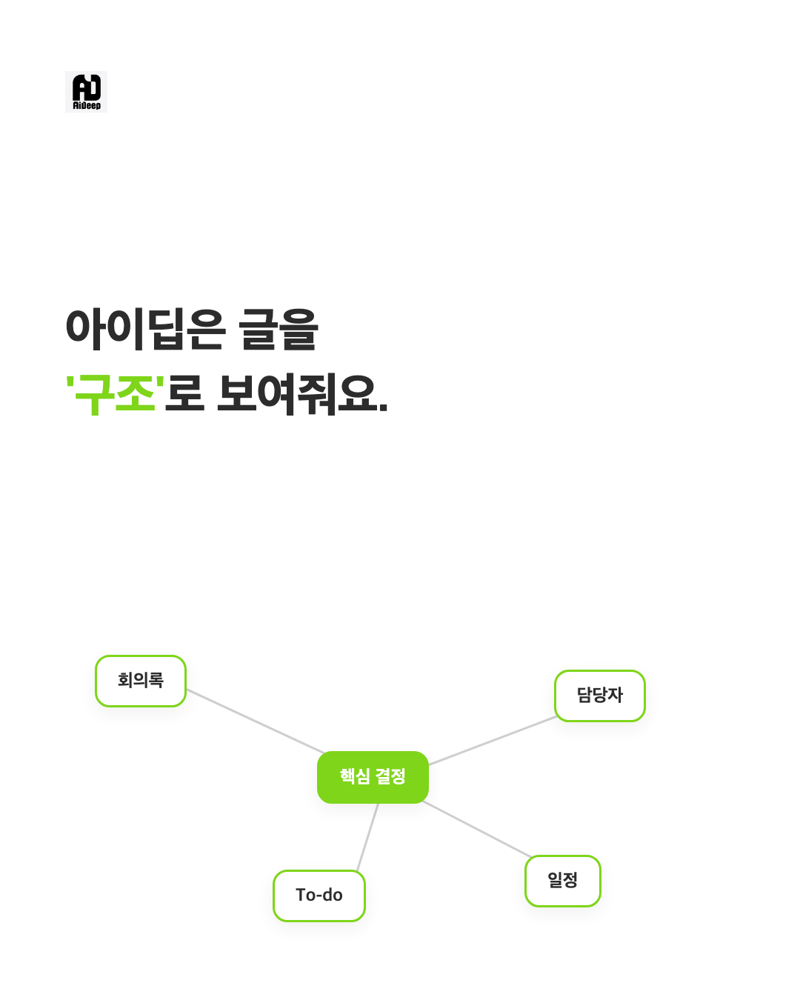
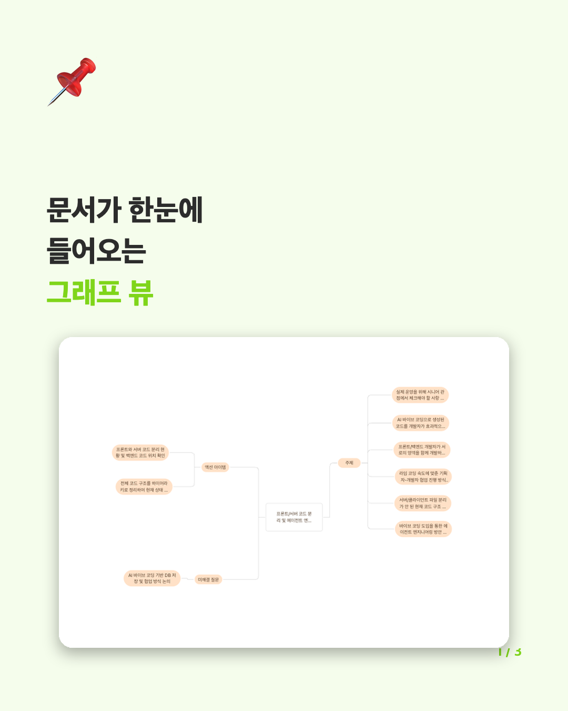
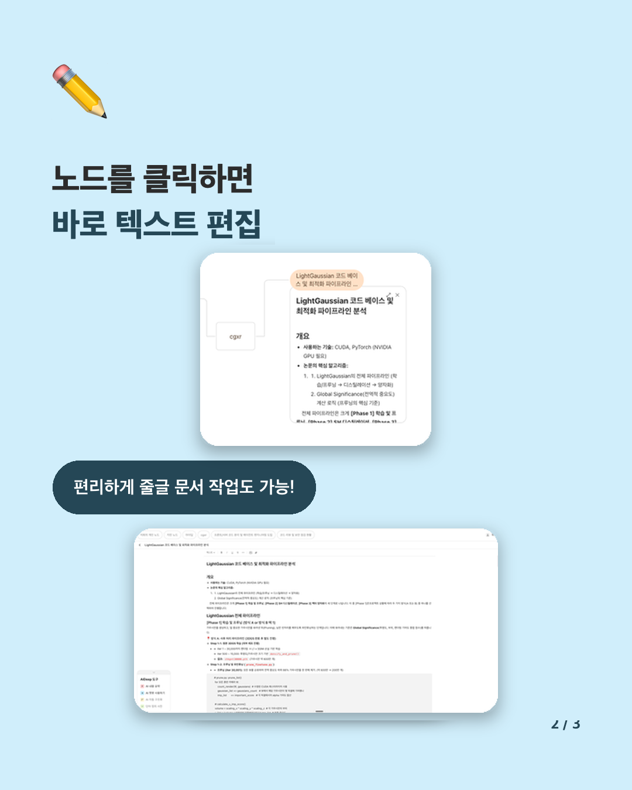
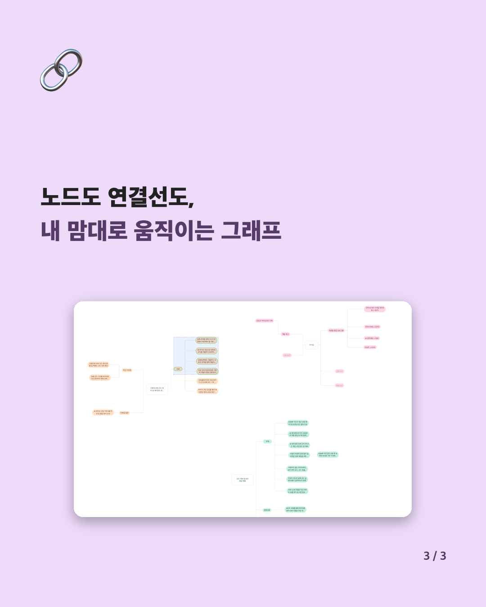

AIDEEP
마인드맵으로 기록을 정리하는
마인드맵으로 기록을 정리하는
텍스트 에디팅 & 구조화 툴
- 기록 구조화
- 마인드맵 뷰에서 즉시 편집
- 전체 기록 한눈에 파악
Notion처럼 줄글부터 읽어야 하는 게 답답하고,
Obsidian처럼 편집하려면 노드를 따로 열어야 하는 게 불편해서 —
노드 위에서 바로 쓰고, 그래프로 한눈에 보는 툴을 만들었어요.




AiDeep 기본 사용법
이제, 직접 그래프를
만들어 보세요
빈 공간을 우클릭해 주제를 만들고, 노드를 클릭해 텍스트를 편집하고,
드래그로 자유롭게 옮기면서 생각을 정리해보세요.